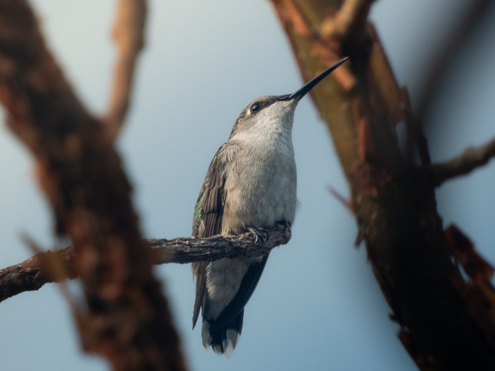

Colibrí Garganta Rubí
Archilochus colubris (Linnaeus, 1758)
Inglés: Ruby-throated Hummingbird
El Colibrí Garganta Rubí (Archilochus colubris) es un colibrí de la subfamilia Trochilinae (mountain gems, bees y esmeraldas), tribu Mellisugini (bees). Pesa alrededor de 3.1 g y su pico mide 20.7 mm. Vive en 12 países, entre ellos Estados Unidos, Canadá, México, Costa Rica y Guatemala. Su estado en la Lista Roja de la UICN es Preocupación menor, con una población en aumento.
Verlo en el explorador Página en eBird ↗
De un vistazo
- Peso
- 3.1 g, más o menos 3 clips
- Pico
- 20.7 mm
- Vive en
- Bosque abierto
- Movimientos
- Migra
- Lista Roja
- Preocupación menor, en aumento
Su lugar en la familia
- Familia Trochilidae colibríes
- Subfamilia Trochilinae mountain gems, bees y esmeraldas
- Tribu Mellisugini bees
- Género Archilochus
Lo que tienen en común los Archilochus: Dos especies, el Colibrí Garganta Rubí y el Colibrí Barba Negra, y las dos migran. Algunos colibríes garganta rubí cruzan el Golfo de México sin parar, unas 20 horas sobre el mar abierto.
Dónde vive · 18 países
- Estados Unidos
- Canadá
- México
- Costa Rica
- Guatemala
- Belice
- El Salvador
- Honduras
- Nicaragua
- Panamá
- Bahamas
- Cuba
- Bermudas visitante raro
- Islas Caimán visitante raro
- San Pedro y Miquelón visitante raro
- República Dominicana visitante raro
- Haití visitante raro
- Jamaica visitante raro
Otros del género Archilochus
- Colibrí Barba Negra Archilochus alexandri
Fuentes
Nombres: eBird/Clements Checklist (Cornell Lab of Ornithology), con los nombres en español de eBird México. Grupos: Dickinson y Remsen (2013) y McGuire et al. (2014); los nombres de los grupos siguen los de eBird en español cuando existen y, si no, se dejan en inglés. Peso, pico, hábitat y movimientos: AVONET (Tobias et al. 2022, CC BY 4.0). Países: BirdLife International DataZone, comparado con registros de eBird a través de GBIF. Estado y tendencia en la Lista Roja: BirdLife International, la autoridad de la Lista Roja de la UICN para las aves.
¿Encontraste un error o tienes una foto de esta especie? Escríbele a Lia